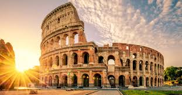
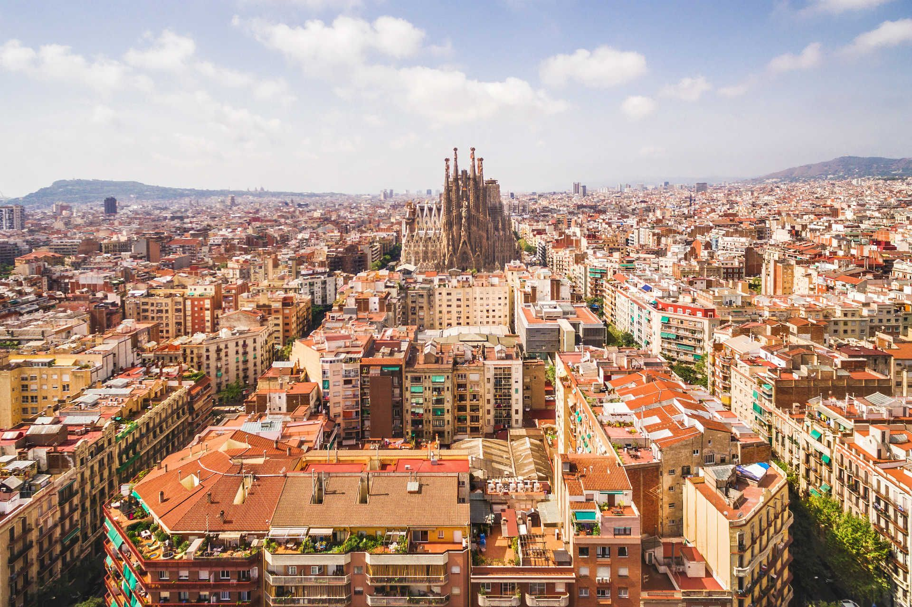

Головна | Всі тури | Питання та відгуки | Реєстрація
На цій сторінці зібрано основну інформацію про екскурсійні маршрути. Тут можна переглянути короткий опис турів, ознайомитися з таблицями та побачити карту кожного напрямку.
Кожен маршрут має свої особливості: історичні пам’ятки, культурні об’єкти, архітектурні ансамблі та цікаві туристичні місця. Нижче подано перелік напрямків, між якими можна швидко перейти.
| Львів | Прага | Рим | Барселона |
|---|---|---|---|
|
|
 |
 |
| Про Львів | Про Прагу | Про Рим | Про Барселону |
| Екскурсія історичним центром міста. | Оглядова екскурсія старим містом. | Подорож античними пам’ятками. | Маршрут архітектурними об’єктами. |
| Місто | Інформація про маршрут | Вартість | |
|---|---|---|---|
| Тривалість | Особливості | ||
| Львів | 3 години | Історичний центр, площа Ринок, Оперний театр | 10 € |
| Прага | 3 години | Карлів міст, Старе місто | 15 € |
| 4 години | Додатковий маршрут до Празького граду | 20 € | |
| Рим | 4 години | Колізей, Форум, площі та античні пам’ятки | 20 € |
| Барселона | 3 години | Саграда Фамілія, Готичний квартал, центральні площі | 18 € |
Львів є одним із найпопулярніших туристичних міст України. Екскурсія включає прогулянку історичним центром, знайомство з архітектурою міста та огляд найвідоміших пам’яток.
Під час маршруту туристи можуть побачити площу Ринок, Латинський катедральний собор, Оперний театр і старовинні вулички міста.
Карта Львова
Прага приваблює туристів середньовічною архітектурою, атмосферою старого міста та великою кількістю історичних об’єктів. Це один із найпопулярніших напрямків у Європі.
Екскурсія охоплює Карлів міст, Староміську площу, а також інші центральні туристичні зони міста.
Карта Праги
Рим — місто з унікальною історичною спадщиною, де кожна вулиця пов’язана з подіями давнини. Екскурсія дає змогу побачити найвідоміші античні пам’ятки.
У маршрут входять Колізей, Римський форум, стародавні площі та інші визначні місця, які приваблюють туристів з усього світу.
Карта Рима
Барселона відома своєю архітектурою, морською атмосферою та творчою спадщиною Антоніо Гауді. Це сучасне й водночас історичне місто, яке дуже популярне серед туристів.
Під час екскурсії можна побачити Саграда Фамілія, Готичний квартал, центральні площі та інші архітектурні пам’ятки.
Карта Барселони